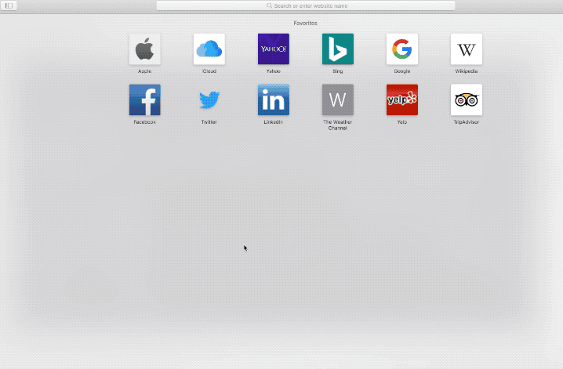
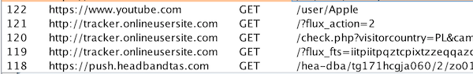
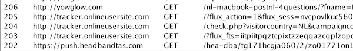

To phish or not to phish - Blog
Iron Flower, Mar 2019
To phish or not to phish
-- Introduction
As part of my job I occasionally investigate malicious looking e-mails and phishing websites. In most cases a phishing mail looks quite obvious. It has an unknown sender, a URL redirecting to an unknown website and some text to lure you to click on the link. Once clicked the victim is redirected to a malicious website posing as an original website to gather credentials from the user.
Last week I encoutered something different. An employee of a company I work for received an ordinary phishing mail containing a URL. Normally I use something like browserling.com to check what is behind the link. Once I opened the URL with browserling, the website loaded for a couple seconds, and then after a couple redirects I was presented with the offical website of YouTube. I thought this was kind of odd but I didn't think much of it at the moment.
-- Android malware
Then a previous experience came to mind. A while back I was investigating an Android malware that was spread within Europe. After reverse-engineering the malware it looked like any other banking malware which would present an overlay on the screen of the victim to capture credentials. What made this malware different is that once it is installed on the phone of the victim the first thing it would do is check the country code of the phone. If the phone's country code was Russia, it would simply delete itself as if nothing was ever happened. The hackers behind this malware build a logic to exclude certain countries of their attack. I wondered if phishers are doing something similiar?
-- To phish?
I looked back into the phishing mail and found out that the URL in the mail redirects users based on their geopgrahic location. So for example, victims visiting the phishing website from Poland will be redirected to the official site of YouTube. But if you're visiting from the Netherlands, you will be redirected to a phishing website disguised as PostNL (a mail delivery company in the Netherlands). Quite interesting..
In the video below you see that a victim from the Netherlands opening the URL is redirected to a phishing website. Once you're connected with a Polish server and visit the exact same site again you get redirected to YouTube.

Here's the phishing link opened with VPN (location Poland). As can be seen the user is redirected to the offical Apple page in YouTube.

Here's the exact same phishing link opened without VPN (location the Netherlands). The user is redirected to a phishing page acting as a website of PostNL.

-- Others
I was curious if these kind of phishing attacks are common. I couldn't find much information but I did find a phishing campaign from 2017 which used a similiar technique. In that particular case malware was delivered to your device based on the country you were visiting from. According to Cofense: "It is not as common for those attackers to deploy different malware tools based upon the geographic location of their victim." Read the whole article
here.